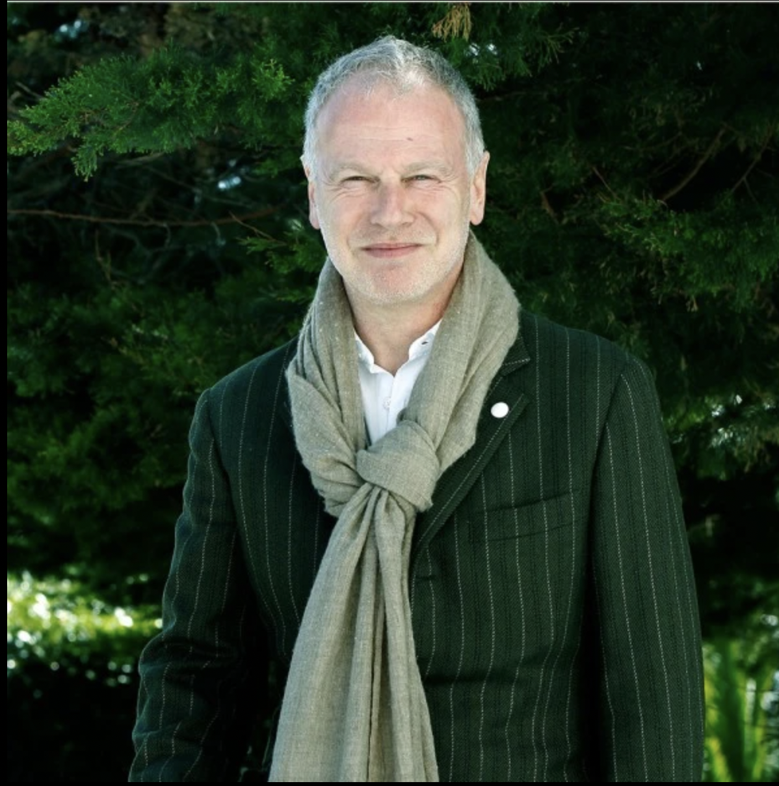
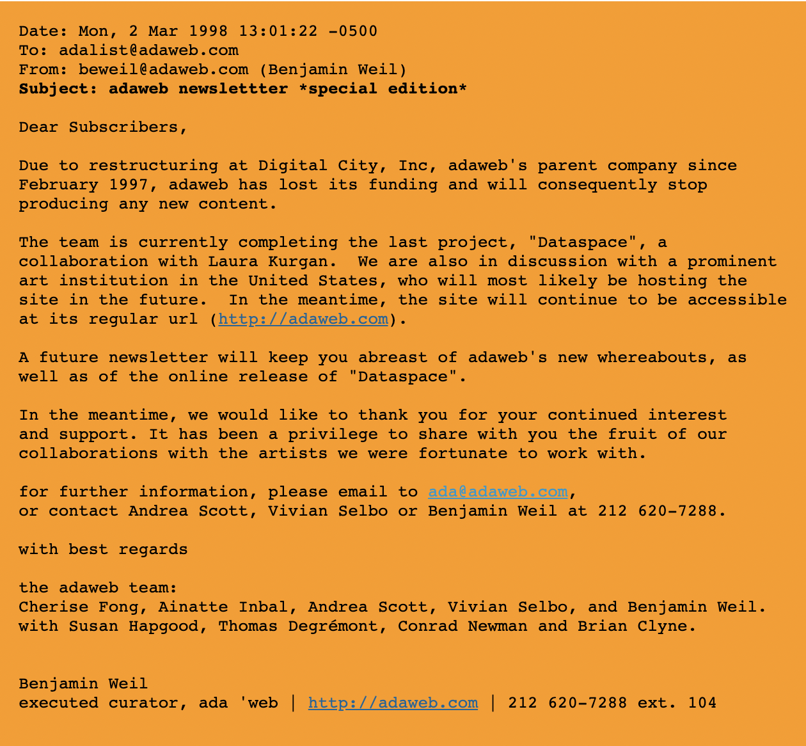

John Borthwick(Entrepreneur) & Benjamin Weil(Curator) created the
piece in 1994 and it lasted till 1998. Ada web was the first digital
production studio that commissioned contemporary artists. The name
came from Lady Ada Augusta Lovelace who is known to be the 1st
computer programmer. Ada web holds artworks that experiment with the
internet. This is a platform where digital artists can upload their
work. Multiple pieces shown in art. Platform is meant to evaluated as
a whole, not by individual works. When clicked on link by multiple
users, different art pieces are the shown to the user.


WP studio ran the site but after being bought by AOL there was not
alot of financial support and it was shut down til late 1998 where
Steve Dietz (curator) took hold of site and made it part of Walker Art
Center, adaweb.walkerart.org